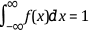

The following equation defines the probability distribution function F(x).
where F(x) is the probability density function, f(x) ≥ 0 ∀ x ∈ domain of f, and .
By performing differentiation, you can derive the following equation from the previous equation.
You can use a histogram to obtain a denormalized discrete representation of f(x). The following equation defines the discrete representation of f(x).
The following equation yields the sum of the elements of the histogram.
where m is the number of samples in the histogram and n is the number of samples in the input sequence representing the function.
Therefore, to obtain an estimate of F(x) and f(x), normalize the histogram by a factor of Δx = 1/n and let hj = xj.